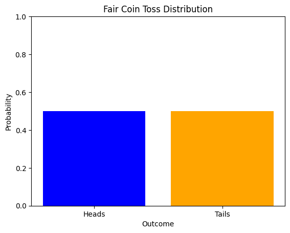
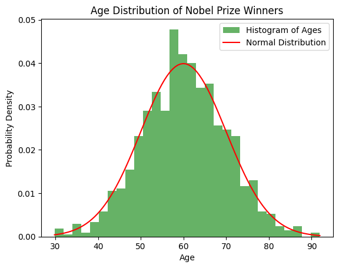
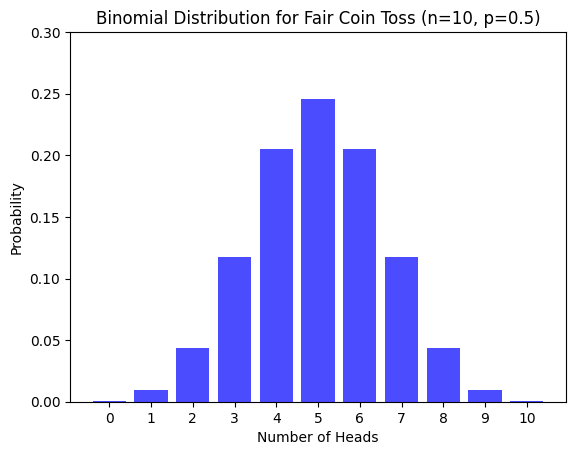
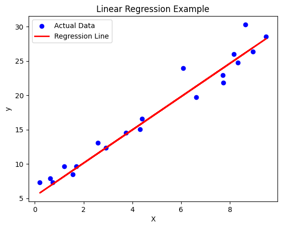

import numpy as np
import matplotlib.pyplot as pltMaths and Statistics
This crash course will teach you the basic mathematics and statistics concepts you need to know for Data Science
Keywords
python basics, variables, numbers, operators, containers, flow control, advanced, modules, file handling, statistics, mean
Linear Algebra for Data Science
We’ll cover essential linear algebra concepts, including Vectors and Matrices and Matrix Operations, with Python code examples using NumPy.
1. Vectors and Matrices
Vector: A vector is an ordered list of numbers, which can be represented as a row or column.
# Creating a vector
vector = np.array([3, 4])
print("Vector:", vector)Vector: [3 4]Matrix: A matrix is a two-dimensional array of numbers.
# Creating a matrix
matrix = np.array([[1, 2], [3, 4]])
print("Matrix:\n", matrix)Matrix:
[[1 2]
[3 4]]Applications of Vectors and Matrices - Representing physical quantities like force, velocity, and acceleration - Describing geometric shapes and transformations - Organizing and modeling data in data science
2. Matrix Operations
Addition and Subtraction
A = np.array([[1, 2], [3, 4]])
B = np.array([[5, 6], [7, 8]])
print("Matrix A:\n", A)
print("Matrix B:\n", B)Matrix A:
[[1 2]
[3 4]]
Matrix B:
[[5 6]
[7 8]]# Element-wise addition
A = np.array([[1, 2], [3, 4]])
B = np.array([[5, 6], [7, 8]])
C = A + B
print("A + B:\n", C)A + B:
[[ 6 8]
[10 12]]# Element-wise subtraction
A = np.array([[1, 2], [3, 4]])
B = np.array([[5, 6], [7, 8]])
D = A - B
print("A - B:\n", D)A - B:
[[-4 -4]
[-4 -4]]Matrix Multiplication
# Element-wise multiplication
A = np.array([[1, 2], [3, 4]])
B = np.array([[5, 6], [7, 8]])
E = A * B
print("Element-wise A * B:\n", E)Element-wise A * B:
[[ 5 12]
[21 32]]# Dot product (Matrix multiplication)
A = np.array([[1, 2], [3, 4]])
B = np.array([[5, 6], [7, 8]])
F = np.dot(A, B)
print("Dot Product A @ B:\n", F)Dot Product A @ B:
[[19 22]
[43 50]]# **Transpose of a Matrix**
A = np.array([[1, 2], [3, 4]])
G = A.T
print("Transpose of A:\n", G)Transpose of A:
[[1 3]
[2 4]]Research:
- Inverse Matrix
- Determinant
- Eigenvalues and Eigenvectors
Derivatives and Gradients in Calculus
Derivatives measure the rate of change of a function.
from sympy import symbols, diff# Define symbol x for differentiation
x = symbols('x')
f = x**2 + 3*x + 2
# get derivative
f_derivative = diff(f, x)
print("Derivative of f(x) = x^2 + 3x + 2 is:", f_derivative)Derivative of f(x) = x^2 + 3x + 2 is: 2*x + 3Gradient
The gradient of a function represents the direction and rate of steepest increase of that function at any given point.
Applications of Gradient
- Optimization algorithms
Probability Distributions
Probability distributions describe how values are distributed. Here, we explore some common ones: Uniform, Normal, Binomial.
Uniform Distribution
In a uniform distribution, all values within a range are equally likely.
import numpy as np
import matplotlib.pyplot as plt
import seaborn as sns
import scipy.stats as stats# Discrete uniform distribution for a fair coin (2 outcomes: heads or tails)
outcomes = ['Heads', 'Tails']
probabilities = [0.5, 0.5]
# Plotting
plt.bar(outcomes, probabilities, color=['blue', 'orange'])
plt.title('Fair Coin Toss Distribution')
plt.xlabel('Outcome')
plt.ylabel('Probability')
plt.ylim(0, 1)
plt.show()
Examples of uniform distributions
- Rolling a fair die
- Flipping a fair coin
- Drawing a card from a well-shuffled deck
Normal Distribution
A normal (Gaussian) distribution is symmetric, centered around the mean.
from scipy.stats import norm
# Simulating Nobel Prize winner ages (mean = 60, std dev = 10)
mu, sigma = 60, 10
ages = np.random.normal(mu, sigma, 1000) # Generate 1000 random ages
# Plotting the histogram of ages
plt.hist(ages, bins=30, density=True, alpha=0.6, color='g', label='Histogram of Ages')
# Plot the normal distribution PDF
x = np.linspace(ages.min(), ages.max(), 100)
y = norm.pdf(x, mu, sigma)
plt.plot(x, y, 'r-', label='Normal Distribution')
plt.title('Age Distribution of Nobel Prize Winners')
plt.xlabel('Age')
plt.ylabel('Probability Density')
plt.legend()
plt.show()
Examples of normal distributions
- Heights of people
- IQ scores
- Measurement errors
- Stock price fluctuations
Binomial Distribution
The binomial distribution models the number of successes in n trials.
from scipy.stats import binom
# Parameters
n, p = 10, 0.5 # Number of trials and probability of success (fair coin)
x = np.arange(0, n + 1) # Possible number of heads (successes)
y = binom.pmf(x, n, p) # Binomial PMF (probability mass function)
# Plotting the binomial distribution
plt.bar(x, y, color='blue', alpha=0.7)
plt.title('Binomial Distribution for Fair Coin Toss (n=10, p=0.5)')
plt.xlabel('Number of Heads')
plt.ylabel('Probability')
plt.xticks(np.arange(0, n + 1))
plt.ylim(0, 0.3) # Limiting y-axis for better visualization
plt.show()
Examples of binomial distributions
- Number of heads in coin flips
- Number of defective items in a batch
- Number of customers who click on an ad
- Number of students who pass an exam
Expectation and Variance
Expectation (mean) of a random variable X is E[X] = Σ x * P(x)
Variance measures spread: Var(X) = E[X^2] - (E[X])^2
# Example with a discrete random variable
values = np.array([1, 2, 3, 4, 5])
probs = np.array([0.1, 0.2, 0.3, 0.2, 0.2]) # Probabilities sum to 1
expectation = np.sum(values * probs)
variance = np.sum((values**2) * probs) - expectation**2
print(f"Expectation (E[X]): {expectation}")
print(f"Variance (Var[X]): {variance}")
# For a normal distribution
mean, std_dev = 5, 2
expectation_norm = mean
variance_norm = std_dev ** 2
print(f"Normal Distribution - Expectation: {expectation_norm}, Variance: {variance_norm}")Expectation (E[X]): 3.2
Variance (Var[X]): 1.5599999999999987
Normal Distribution - Expectation: 5, Variance: 4Applications of Expectation and Variance
- Portfolio management
- Insurance risk assessment
- Machine Learning model performance
- Hypothesis testing
Statistics in Data Science
This notebook covers Descriptive Statistics and Regression Analysis with examples in Python.
import numpy as np
import pandas as pd
import matplotlib.pyplot as plt
import seaborn as sns
from scipy import stats
from sklearn.linear_model import LinearRegression
from sklearn.model_selection import train_test_split
from sklearn.metrics import mean_squared_error, r2_scoreDescriptive Statistics
# Descriptive Statistics
data = [12, 15, 14, 10, 8, 10, 12, 15, 18, 20, 20, 21, 19, 18]
print(f"Dataset: {data}")
mean_value = np.mean(data)
median_value = np.median(data)
mode_value = stats.mode(data).mode
std_dev = np.std(data)
print(f"Mean: {mean_value}")
print(f"Median: {median_value}")
print(f"Mode: {mode_value}")
print(f"Standard Deviation: {std_dev}")Dataset: [12, 15, 14, 10, 8, 10, 12, 15, 18, 20, 20, 21, 19, 18]
Mean: 15.142857142857142
Median: 15.0
Mode: 10
Standard Deviation: 4.120630029101703Regression Analysis
# Regression Analysis
np.random.seed(42)
X = np.random.rand(100, 1) * 10 # Independent variable
y = 2.5 * X + np.random.randn(100, 1) * 2 + 5 # Dependent variable with noise
# Splitting the data
X_train, X_test, y_train, y_test = train_test_split(X, y, test_size=0.2, random_state=42)
# Applying Linear Regression
model = LinearRegression()
model.fit(X_train, y_train)
y_pred = model.predict(X_test)
# Model Performance
print(f"Intercept: {model.intercept_[0]}")
print(f"Slope: {model.coef_[0][0]}")
print(f"Mean Squared Error: {mean_squared_error(y_test, y_pred)}")
print(f"R-squared Score: {r2_score(y_test, y_pred)}")
# Plotting the Regression Line
plt.scatter(X_test, y_test, color='blue', label='Actual Data')
plt.plot(X_test, y_pred, color='red', linewidth=2, label='Regression Line')
plt.title("Linear Regression Example")
plt.xlabel("X")
plt.ylabel("y")
plt.legend()
plt.show()Intercept: 5.285826638917127
Slope: 2.419729462992111
Mean Squared Error: 2.6147980548680128
R-squared Score: 0.9545718935323326
Applications of Regression Analysis
- Predictive modeling
- Time series forecasting
- Causal inference
- Feature engineering